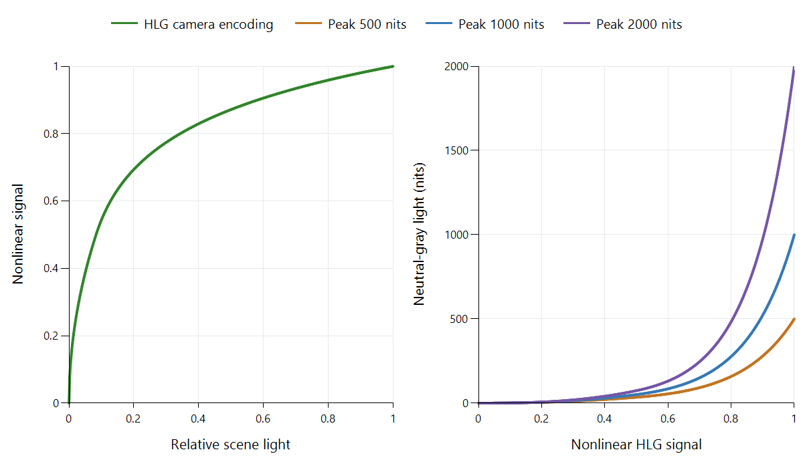

Hybrid Log-Gamma (HLG)
A broadcaster needs one HDR signal that can be distributed and rendered on displays with different useful brightness ranges. Hybrid Log-Gamma (HLG) approaches this with a relative scene-light representation and a defined system relationship to the display. The basic rendering does not need a separate content-dependent mastering record for each program.
The BBC and NHK developed HLG for television use. Its capture curve combines a lower power segment with an upper logarithmic segment, while its display processing establishes an appropriate scene-to-screen rendering.

Calculated BT.2100 examples under reference conditions, with zero black. The display examples use the specified peak-dependent system gamma within the 400–2,000-nit monitoring range. They are not television or Emby measurements.
The camera curve assigns scene light to signal values
Let E be normalized scene light and V its encoded signal. The reference OETF uses:
- V = sqrt(3E) for E up to 1/12.
- V = a × ln(12E − b) + c above 1/12.
The constants are a = 0.17883277, b = 1 − 4a, and c = 0.5 − a × ln(4a). The two segments meet at E = 1/12 and V = 0.5. That join divides the lower power portion from the upper logarithmic portion; it is not a physical maximum for the camera.
The curve assigns signal positions to relative captured light. An output still needs to decide what light those positions produce on its screen. Camera exposure and production choices establish how the scene is placed within this representation.
Rendering adds the scene-to-display relationship
A renderer first interprets the signal and recovers the relevant scene-light values using the inverse OETF. It then applies the overall rendering relationship, or OOTF, for the display and environment.
For neutral gray, an ideal zero-black reference example can be expressed as L = Lw × E^gamma, where Lw is the nominal peak luminance. At a 1,000-nit reference peak, system gamma is 1.2.
Follow V = 0.75 through that example:
- Inverting the HLG OETF gives E of approximately 0.265.
- Applying the reference relationship gives 1,000 × E^1.2.
- The resulting neutral-gray light is approximately 203 nits.
This is a complete system calculation under its stated conditions. Interpreting V = 0.75 as 75% of 1,000 nits would skip both nonlinear operations.
For colored pictures, the reference OOTF uses the scene's luminance to determine a common scaling of the linear RGB components. It does not independently raise each colored component to the system-gamma power. That preserves the intended component relationships during this part of rendering. Numerical range, primaries, and component-matrix interpretation are still required before the calculation.
The same signal adapts to different peak targets
Within the reference monitoring range, BT.2100 specifies gamma = 1.2 + 0.42 × log10(Lw/1,000). Black-level treatment and viewing conditions also belong to the full system. The zero-black examples isolate the peak-dependent effect:
| Nominal display peak | System gamma | Light for neutral V = 0.75 |
|---|---|---|
| 500 nits | About 1.074 | About 120 nits |
| 1,000 nits | 1.200 | About 203 nits |
| 2,000 nits | About 1.326 | About 343 nits |
Each uses the same encoded value and the same recovered relative scene value. The overall display relationship changes to fit the target. The right-hand plot makes that difference visible across the whole signal range.
PQ places an absolute reference-display light meaning on the encoded values. HLG instead includes this display-adapted overall relationship in its system. A PQ/HLG conversion must account for where that relationship is applied; swapping transfer labels would not perform the conversion.
Why the metadata model suits television workflows
A relative scene-based signal can move through conventional production and playout operations without requiring each program to supply dynamic content analysis for its basic HDR display relationship. The receiving system still needs signaling identifying HLG and the correct color representation. “No content-dependent metadata required” does not mean “no interpretation information needed.”
The defined rendering also gives different output targets a common system starting point. Content can still be graded and monitored creatively: scene-referred describes the relationship of the representation, rather than implying that a finished broadcast is an untouched sensor recording.
A camera HLG recording can provide a viewing-oriented HDR signal. Camera log footage has another representation and normally needs its production transform. The recording mode identifies which relationship is in the file.
What the SDR-compatibility claim means
HLG's shape was designed to provide a degree of useful compatibility with suitable conventional television paths. That does not make HLG samples numerically identical to a finished BT.709 SDR master. The wide color representation also has to be addressed when producing a BT.709 output.
An HDR-aware conversion can interpret the HLG system and prepare an SDR rendition deliberately. A legacy path that applies a conventional component response can approximate aspects of the picture without completing the specified HLG rendering. These are different presentation paths, which is why compatibility must be tied to actual signal handling.
Locate HLG within the delivered stream
HLG appears in broadcast recordings and personal videos served by Emby. Inspect the source transfer field, the server's delivered rendition, and the app/display output mode when tracing a result. A source identified as HDR is not necessarily PQ or HDR10.
If the server converts an HLG recording to SDR, check the newly produced output interpretation. If it delivers HLG unchanged, the later renderer needs to complete the appropriate system relationship. A change in bitrate alone would not explain or correct a mistaken transfer interpretation.
Some Dolby Vision Profile 8 material uses an HLG-compatible base with additional Dolby Vision information. In that case, base signal and dynamic system describe two parts of one presentation. Identify which path is actually being used before comparing the resulting picture.